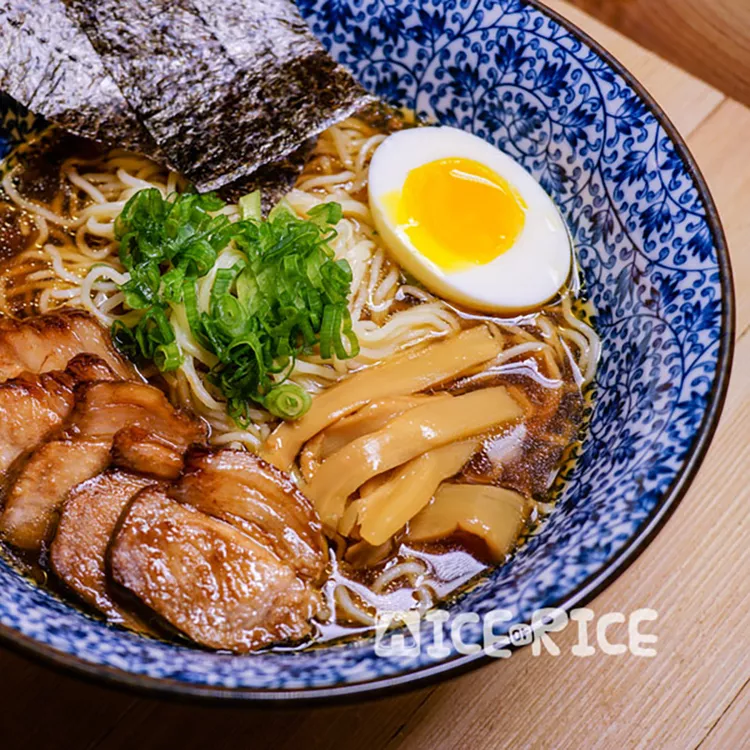

This clear broth seasoned with soy sauce seems very simplistic, but it belies the intense umami flavor within the soup. We use chicken and 4 types of dried seafood to create an incredibly savory broth that is seasoned with a soy sauce tare that gives the broth a bit of sweetness and wonderful complexity. The best thing about this recipe is that we use a pressure cooker that not only helps extract all the flavor very quickly but also creates a beautifully clear broth.